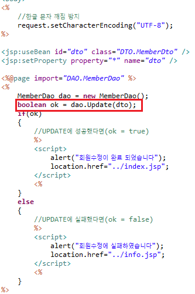

1. 우선 DAO에서 Update 코드를 작성하자
2. 그리고 이걸 받아서 update를 가능하게할 update.jsp 양식을 만들자
대충 join.jsp의 코드를 복붙해서 조금씩 수정만 해줘도 된다
3. 또 수정 form에 대한 proc/updateproc.jsp도 만들어 주어야 한다
joinproc와 완전히 같으니 그대로 복붙해서 내용만 바꾸자

4. 회원목록조회에서 특정회원번호를 눌러 update로 이동하는지 확인
5. 수정도 정상적으로 잘 되는지 내용을 변경해서 확인해보자